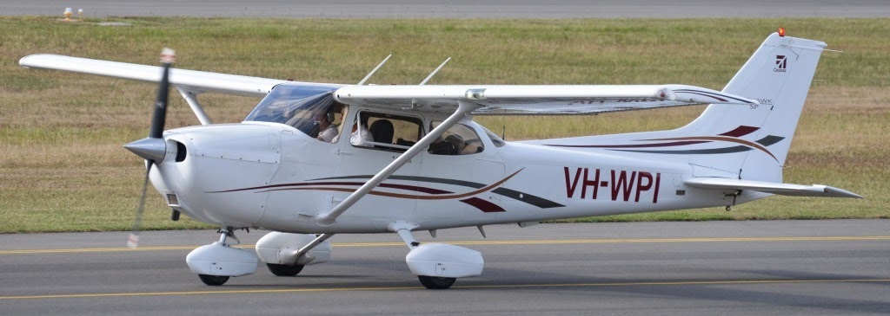
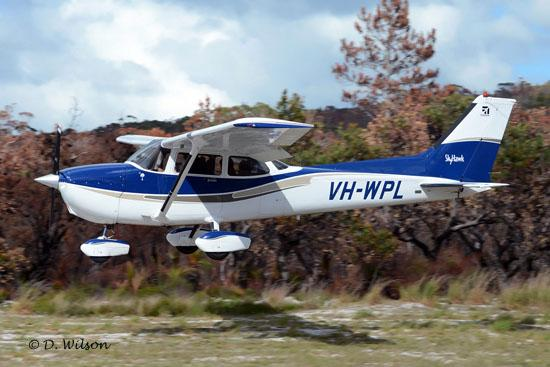

Brisbane Flying Group
Enquiries
Booking Site
A flying group based at Archerfield Airport
About Us
Members Info
 
For all inquiries regarding the Brisbane Flying Group contact the Secretary, Greg Dunn.
Contact us